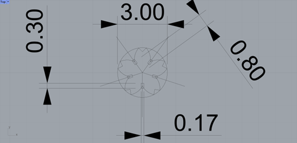

Belinda Bleeker's Assignment 1!

I started my assignment by looking for ideas online. I found this example using flowers and connectors to make a model. I wanted to try a different flower shape, a Sakura blossom. I found this image and used Adobe Illustrator to turn it into an outline. I moved that outline to Rhino and used one of the line paths to outline the blossom.
{kind=link}


I then used the polar array in Rhino to create an hexitagon with a cut-out section to be the connector piece. To complete this I first used one half of on of the petals I had outlined and mirrored it to make one petal. This was done within a 3" circle, the edge of the petal should touch the outline of the circle. I polar arrayed this shape six times. Next, I made a rectangle the width of the cardboard, polar arrayed 6 times inbetween the petals. Next I used trim to cut out the connector sections and finally, joined all of the remaining curves together (except the circle).

I made a second piece which I would use to be a connector. I made a circle and made a line at the the top of it and polar arrayed that 6 times. I used the same rectangle system to make the cut outs. Lastly I trimmed the piece of the circle that went outside those lines before joining the curves together.
I tested the model with the laser cutter at The 8 and it did not pass the shaker test.

I got some help from Junchao to shrink the cutouts for the press fit and it passed the shake test.

Lastly, I did a final run at The 8 with the following settings:
Power: 100%, Speed:10%, PPI: 300, Z-Axis 0.165” Vector Performance: Quality, Throughout.
Material: General Soft Wood and Material Thickness: 0.165”

Here is the final shake test.

Documentation:
Acknowledgements
My partner Peter for helping me design in Rhino
Junchao for showing me how to change the cut-out size without re-doing the whole file
The 8 staff for helping me figure out the right settings for the laser cutter
And my friend Dana for helping me put this site together
Return to index